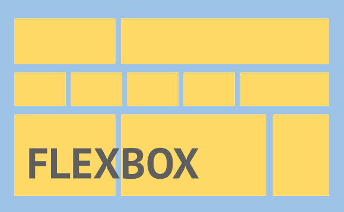
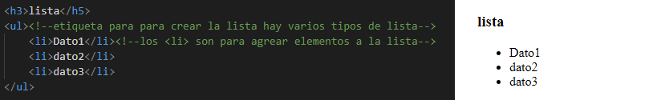
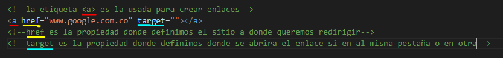

Flex Box
Flexbox es un sistema de elementos flexibles que llega con la idea de olvidar estos mecanismos y acostumbrarnos a una mecánica más potente, limpia y personalizable, en la que los elementos HTML se adaptan y colocan automáticamente y es más fácil personalizar los diseños.
Listas
Las listas en HTML es un elemento muy útil y que se puede ser usado de diferentes maneras ya sea para hacer los que le nombre indica una lista o incluso crear una barra de navegación.
Enlaces
Los enlaces en HTML es una de las principales formas de navegación en un sitio web pueden redirigir al usuario a otras páginas de un sitio web o a paginas externas también puedes redirigir a imágenes o a archivos y documentos para su descarga.
Ejmplo:Ejemplo de enlace
